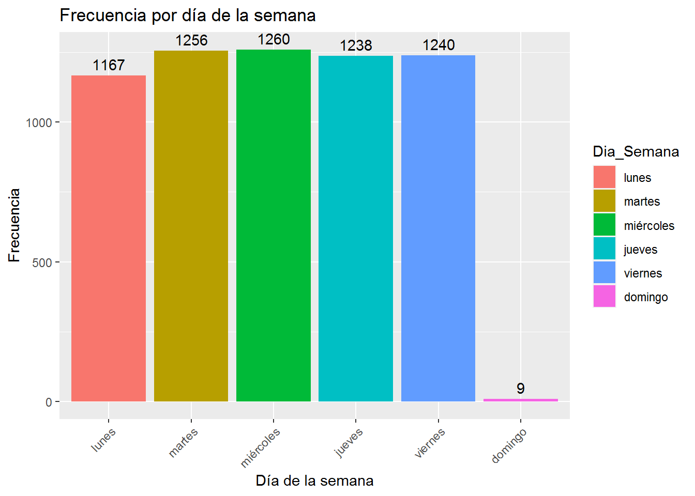
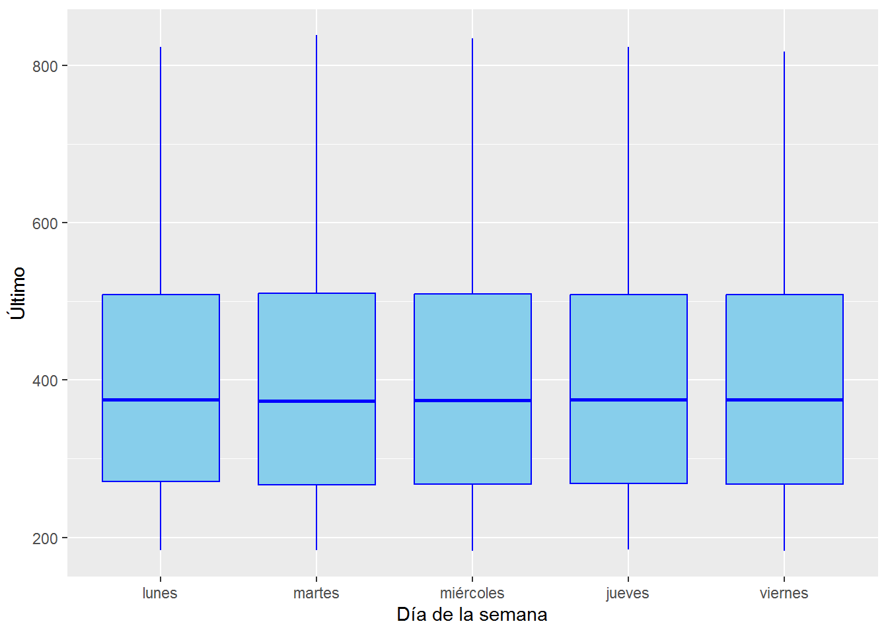

Chapter 4 Análisis descriptivo y filtro base de datos
4.1 Filtro de datos.
Considerando que el foco principal de este ejercicio recae en la variable objetivo último, se opta por construir un nuevo data frame que contenga exclusivamente la fecha y el valor de último.
#data frame filtrado
df_maiz_filtrado <- df_maiz[, c("Fecha", "Último")]
head(df_maiz_filtrado, 5)## Fecha Último
## 1 19/04/2024 433.50
## 2 18/04/2024 426.75
## 3 17/04/2024 430.25
## 4 16/04/2024 431.00
## 5 15/04/2024 431.504.2 Analisis Descriptivo
A continuación se estudiarán los estadísticos descriptivos de la matriz de datos:
str(df_maiz_filtrado)## 'data.frame': 6170 obs. of 2 variables:
## $ Fecha : chr "19/04/2024" "18/04/2024" "17/04/2024" "16/04/2024" ...
## $ Último: num 434 427 430 431 432 ...Teniendo en cuenta que la variable Fecha se encuentra categorizada como caracter y no como fecha, se convierte esta columna a tipo fecha
#Convertir fecha en formato fecha
df_maiz_filtrado$Fecha <- as.Date(df_maiz_filtrado$Fecha, format = "%d/%m/%Y")
#validar
str(df_maiz_filtrado)## 'data.frame': 6170 obs. of 2 variables:
## $ Fecha : Date, format: "2024-04-19" "2024-04-18" ...
## $ Último: num 434 427 430 431 432 ...#install.packages("skimr")
skimr::skim(df_maiz_filtrado)| Name | df_maiz_filtrado |
| Number of rows | 6170 |
| Number of columns | 2 |
| _______________________ | |
| Column type frequency: | |
| Date | 1 |
| numeric | 1 |
| ________________________ | |
| Group variables | None |
Variable type: Date
| skim_variable | n_missing | complete_rate | min | max | median | n_unique |
|---|---|---|---|---|---|---|
| Fecha | 0 | 1 | 2000-01-03 | 2024-04-19 | 2012-03-08 | 6170 |
Variable type: numeric
| skim_variable | n_missing | complete_rate | mean | sd | p0 | p25 | p50 | p75 | p100 | hist |
|---|---|---|---|---|---|---|---|---|---|---|
| Último | 0 | 1 | 409.31 | 159.8 | 182.5 | 268.25 | 374.75 | 509.69 | 838.75 | ▅▇▂▂▁ |
De la salida anterior podemos visualizar que se presentan 6170 registros, el data frame tiene datos que van desde el 03 de Enero del año 2000 hasta el 19 de abril del año 2024, el precio de cierre del maíz en este periodo de tiempo tiene una media de 409 dolares con una desviación estándar de 159 dolares, el valor mínimo se encuentra en 182,5 dolares y el precio máximo en 838.75 dolares.
Ahora, se va analizar el precio de cierre por día de la semana.
#Crear una columna que muestre el día de la semana
df_maiz_filtrado$Dia_Semana <- weekdays(as.Date(df_maiz_filtrado$Fecha))
head(df_maiz_filtrado, 5)## Fecha Último Dia_Semana
## 1 2024-04-19 433.50 viernes
## 2 2024-04-18 426.75 jueves
## 3 2024-04-17 430.25 miércoles
## 4 2024-04-16 431.00 martes
## 5 2024-04-15 431.50 lunes#Ordenar la variable Dia_Semana
df_maiz_filtrado$Dia_Semana <- factor(df_maiz_filtrado$Dia_Semana,
levels = c("lunes",
"martes",
"miércoles",
"jueves",
"viernes",
"sábado",
"domingo"))#Cargar libreria para graficar
#install.packages("ggplot2")
library(ggplot2)## Warning: package 'ggplot2' was built under R version 4.2.3# Crear el gráfico de barras de la frecuencia por día de la semana
ggplot(df_maiz_filtrado, aes(x = Dia_Semana, fill = Dia_Semana)) +
geom_bar() + #Grafico de barras
geom_text( stat = "count", aes(label = ..count..), vjust = -0.5) + #Agregar etiquetas
labs(x = "Día de la semana",
y = "Frecuencia",
title = "Frecuencia por día de la semana") +
theme(axis.text.x = element_text(angle = 45, hjust = 1)) ## Warning: The dot-dot notation (`..count..`) was deprecated in ggplot2 3.4.0.
## i Please use `after_stat(count)` instead.
## This warning is displayed once every 8 hours.
## Call `lifecycle::last_lifecycle_warnings()` to see where this warning was
## generated.
Dado que los días domingos no se generan transacciones en la bolsa y que los datos que se tienen los días domingos solo son 9 en 24 años de historia se decide eliminar estos datos.
#Creando data frame sin el domingo
df_maiz_SD <- subset(df_maiz_filtrado, Dia_Semana != "domingo")
#validando filtro
unique(df_maiz_SD$Dia_Semana)## [1] viernes jueves miércoles martes lunes
## Levels: lunes martes miércoles jueves viernes sábado domingo# Crear el gráfico de boxplot por semana
ggplot(df_maiz_SD, aes(x = Dia_Semana, y = Último)) +
geom_boxplot(fill = "skyblue", color = "blue") +
labs(x = "Día de la semana", y = "Último")